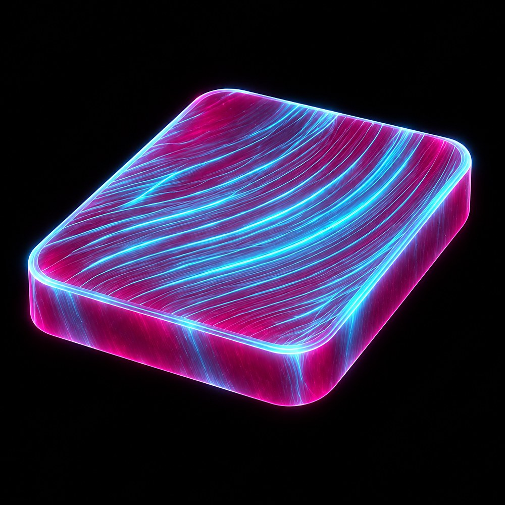
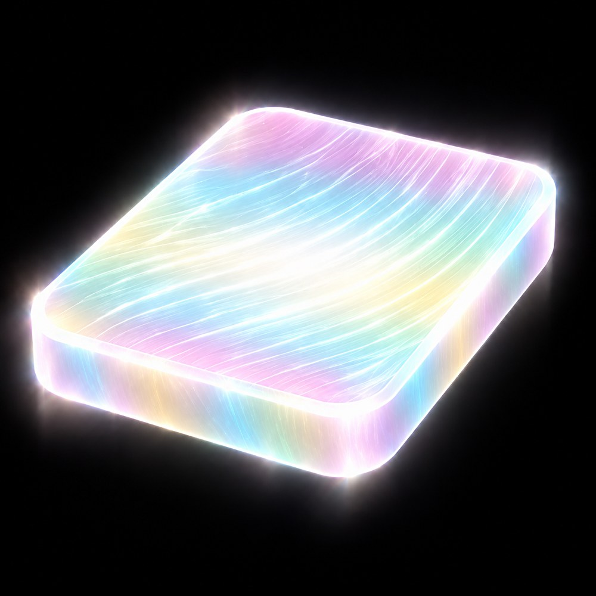
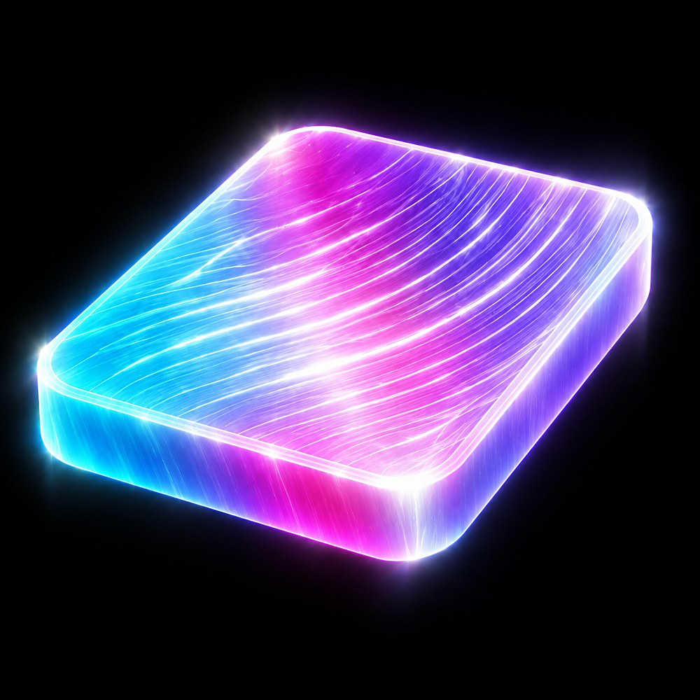
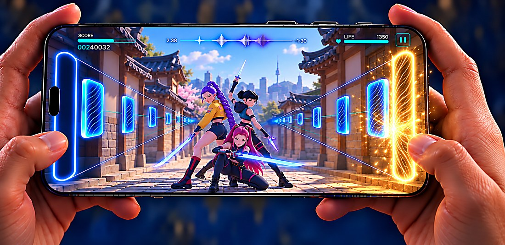
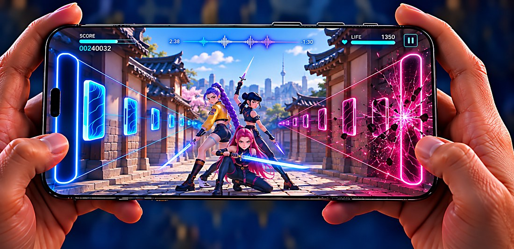
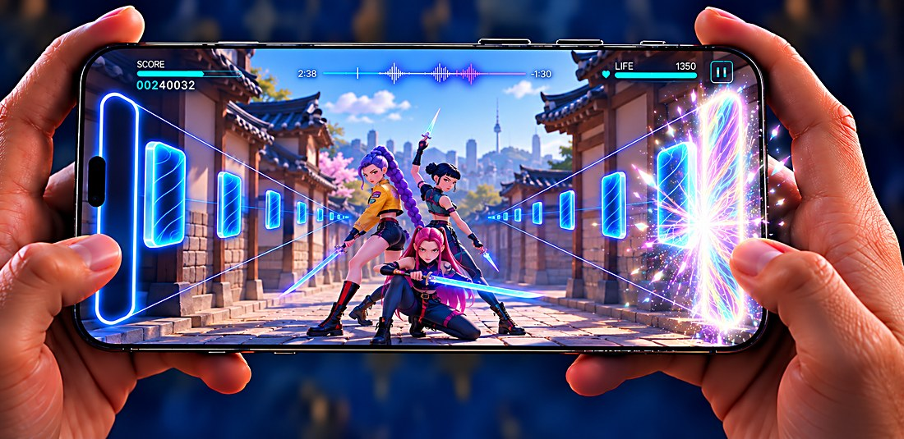

Blue
Base · a correct hit
Tap stateGood
#00C8FF
#0079BA
#9FE8FF
Visual development — proposal
Proposal


Camera movement and cinematic value
Two worlds, one system. In the forest the camera pulls back as they run and leap forward; on the train it tracks sideways in a parallel travelling while they fight across the carriages.
What the clip proves: the board is a fixed plane over the image. The gates, the guide lines and the tiles never move a single pixel, even as the camera flies and the world changes completely. And the tap is musical — it runs on its own, independent of what the characters do.
Two readings of the same board


The difference is note density. In A several rows travel down each corridor at once; in B a single row of tall tiles remains, which reads far cleaner and lets you follow the depth progression piece by piece.
The trade-off: one row per side lowers note density. That is a game design decision before a visual one — fewer inputs per bar, but a much cleaner read of the Z axis.
Exploration


The demanding case is the bright background: against a daylight sky the cyan corridor loses separation and the halo stops reading. If the piece survives there, it survives anywhere.
The forest finding: sunbeams between the trees compete with the perspective lines. In the night arena the guides were the only linear element on screen; outdoors that read has to be defended.
The centre now holds the full trio in action, in combat poses taken from the film. It confirms that the open space of the vertical format fits three characters fighting without covering the corridors or the gates: it stops being one idol dancing and becomes playable cinematic.
The train is the most demanding case: a pastel, low contrast world, almost monochrome lavender, with no black to hold the neon. It is also the only one that brings the demon wave into frame, and therefore the closest to the idea of fighting while you tap.
Four worlds


The four worlds with option B. The pass was also used to simplify the backgrounds — large clean masses instead of scattered detail, silhouettes instead of texture, even light. The world stops competing with the interface and starts supporting it.
Development — states


Good, Great and Miss are resolved: a single hue each, readable at a glance. Excellent is the one still open: it is the only state that holds more than one hue, and that is what puts it above the other three.
The next step is to apply the four states in every world, not only over a dark background where everything works easily.
Proposals for Excellent
This round takes its colour straight from the film rather than inventing a hue. Two references set the codes: the Honmoon barrier, which is turquoise over rose, and the climax spectrum, which is pastel and washed out, not saturated.

The barrier itself. Turquoise strands, #00C8FF, running over a deep rose ground, #CF008D — the exact pairing the film uses for the Honmoon shield. Cool light laid over a warm translucent body, so the tile reads as a piece of the barrier rather than a new invention.

The climax palette, read correctly. The film’s spectrum is not a saturated rainbow: it is high luminance and low saturation — #FF8EF1, #9FE8FF, #FFE9B0 and mint, washed out like light through frosted glass. Same idea as the first Excellent, taken down to the film’s actual values.

One continuous sweep from turquoise through magenta into lilac, electric rather than pastel, with the strands going white where the three meet. It keeps the film’s three strongest hues and drops everything else, so it reads as spectrum at a glance but resolves into a single gesture.
All three are multicoloured, which is what separates them from Good, Great and Miss — those are one hue each, this one is the only state that holds more than one. That is the argument for the spectrum staying: it is not decoration, it is the thing that marks the top of the ladder.
The risk to watch is the magenta, which the Miss already owns. In A it is the ground and the turquoise is the light on top, so the reading inverts; in C it is one third of a sweep. Worth checking both against a Miss side by side before committing.
While it travels · the shape


All three are solid and the same cyan. The only thing that changes is the silhouette. An approaching piece cannot anticipate the outcome, because the outcome does not exist yet: shape says what it is, colour says how it went.
Criterion
If every hit fires a halo, the halo means nothing: when everything is celebrated, nothing is.
VFX becomes economy, not decoration. It is reserved for real merit — the sustained chain, the high point of the song — and the ordinary hit is answered more drily.
The three states across three worlds





The three states differ not only by colour but by mechanism: Great is a golden halo flooding the gate, Miss is a broken field of magenta cracks and shards, Excellent is an iridescent halo with a white core. However the world changes, each one is recognised by how it behaves.
The rule that lets them coexist with any world: the effect lives on the gate, which sits at the screen edge. It can be large and loud without invading the centre, where the film happens.
The finding: in the bright worlds — the pastel train and the sunlit hanok — the fragile state is not Miss but Excellent. Its pastels compete with the ambient light, and what saves it is not colour but value. Hence a concrete constraint: Excellent needs a white core in any bright world. Miss, by contrast, is the most robust of the three: the broken field works identically in all three worlds.
Colour code


Horizontal interface · floor corridors


Vertical interface · side rails, open centre
The same world holds both formats without a single retouch. What changes is where the board lives: on the floor, gaining a Z axis, or at the edges, leaving the whole centre to the character and the camera.
Flat and translucent over a corridor in perspective. It reads by contrast, not by mass.
The most legible of the set and the least memorable. Zero personality, zero misreads.
Almost typographic. The tile nearly disappears and the background takes the lead.
The tile does not move: the device rotates. The camera is the input and the corridor surrounds the player.
Reference — feedback


Plate


System
All three are solid and the same cyan. The only thing that changes is the silhouette. An approaching piece cannot anticipate the outcome, because the outcome does not exist yet.
Left corridor with arrows and a swipe trail, right corridor with simple taps. The difference reads without a second look, and without changing colour.
Colour only appears when there is a verdict. That is why the piece travels in a neutral, low cyan: so that any of the four outcomes reads as a change, even the Good.
Development — states

The halo appears but stays put: it reaches a third of the corridor, thin and in muted cyan. It confirms the hit without rewarding it.

The halo is born at the judgment line and floods the corridor, woven from Honmoon filaments instead of a flat glow.
The ceiling of the system and the goal of the game: it has no cap, it can be chained across every tile. The whole spectrum runs down the corridor to the horizon, with a white core and light spilling over the world.

The strands snap and split open in magenta. What marks the error is not the colour: it is that the corridor goes dark and no halo appears.

The tile stretches into a braided ribbon running the whole corridor, with the halo sustained and pulsing for as long as the note lasts.
The character crosses shifting worlds and the camera chases. There is no board: the world is the corridor.
Every hit lands on the beat and the combo counter is the score. Fighting and tapping are the same action.
The world comes at you along a rail. Depth is the mechanic, not the decoration.

A rooftop over Seoul in full daylight. The demon wave comes in magenta and the two of them draw. The corridors stay cyan: every tile is an attack to block.

The golden arc of the hit and the sword cut are the same event. Board feedback and combat action happen together.

A low angle mid Excellent combo: the whole world turns iridescent. The corridors and the HUD stay nailed in place.
One single travelling · the player never stops tapping
One single long take. The camera travels, tilts and changes axis, but the corridors, the tiles and the HUD do not move a single pixel. That is why the player can keep tapping while the narrative advances: the board is their fixed point and everything else is the film.
Character

Still, she leaves no trace. Barely a breath of Honmoon clinging to the silhouette. The baseline has to be quiet.

The arm and the braid leave a brief arc of combed strands that fades at once. Legible, but modest.

Hands, braid and boot leave arcs that cross in the air. The trace draws the path the limbs have just travelled.

The chain lights the trace: the strands go from cyan to iridescent and stretch out. The character accumulates too.
The trail uses the same material as the tiles — parallel combed strands — and stays cyan while the board is in play, so it never competes with the gold of a hit. It only changes colour when the player state changes, like everything else in the system.


A single Excellent is small. It differs from the gold by colour, not by size. The arena stays dark.

The light starts escaping the corridor: it touches the character’s shoulders, the floor and the front rows of the crowd.

The whole stadium turns iridescent. It is no longer a dark arena with a coloured corridor: it is another world.
Excellent has no cap: it can be chained across every tile, and that is the goal. The effect is cumulative — every excellent hit adds light to the world, and it is the sustained chain that lights the full Honmoon.
Scope

Every image in this deck is an art target: they define the visual code, not render fidelity. This is the same shot translated to what a phone can hold in real time — baked lighting instead of computed reflections, a simplified crowd, fewer particles and billboard VFX instead of volumetrics.
What matters is that the system survives the downgrade. Shape still says what the note is, colour still says how it went, and the board is still the fixed plane. What is lost is render density, not legibility.

Next steps
Note shape across the three worlds.
What leads: the choreography or the board.
Tempo against corridor travel.
How much energy the character leaves behind.
How much motion it takes without hiding the note.
Minimums between corridor, note, character and background.